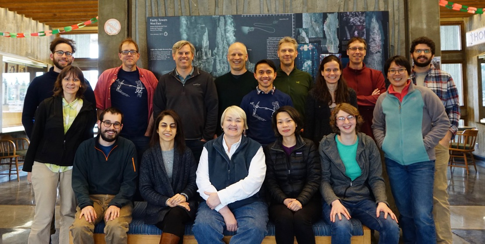

Thank you to all of the CAHW2018 participants!
We are in the process of organizing everyone’s hard work. Check back here for an overview of all of the great projects that came out of CAHW!
If you have photos from the event you’d like to share, please email us!

University of Washington, February 21-23, 2018
To build a stronger user community around the Cabled Array, and to create and promote effective computational data analysis workflows of the real-time data stream, we will be hosting a Cabled Array Hackweek (CAHW) during February 21-23, 2018, at the University of Washington, Seattle.
What is a “hackweek”?
The “hackweek” model has emerged within the data science community as a powerful approach for sharing technical expertise and building an inclusive and cohesive user community, particularly in sciences that require not only domain-specific knowledge but also effective computational data analysis workflows. This is an excellent match for the overarching goal of the Ocean Observatories Initiative (OOI), from which the continuous flow of publicly-available data collected by hundreds of instruments has created great opportunities for scientific discovery through data- and computation-intensive analyses.
What will we do in CAHW?
Centered around the Cabled Array, the CAHW will bring together the user community and the OOI infrastructure and cyberinfrastructure teams, to explore and adapt the hackweek model to ocean-oriented research through both tutorials and hands-on project sessions. In tutorial sessions, we will learn data science tools, cloud computing, and data visualization, in addition to the recently expanded software capability to directly interact with the real-time Cabled Array data stream. During project sessions, we will immediately put these skills to use by creating new tools for exploring, processing and visualizing Cabled Array data, in particular those with complex temporal-spatial coupling patterns and/or of high data volume (e.g., profiler, sonar, hydrophone, etc.).
For additional information on the cabled array, see the Cabled Array site from the Ocean Observatories Initiative, and the Interactive Oceans site from the UW School of Oceanography
This event is by invitation only due to limited space. If interested, contact us at oceanhkw@uw.edu
Supported by: